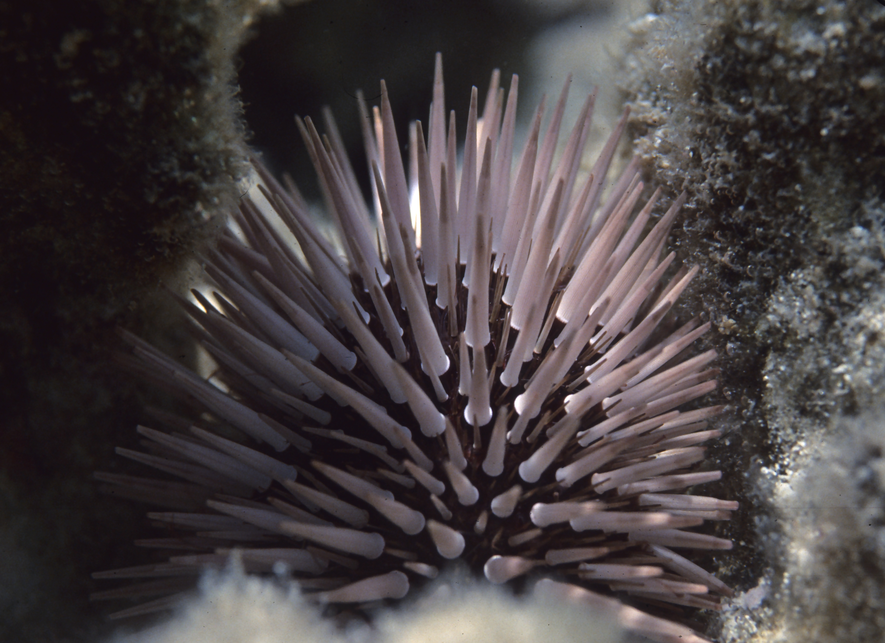
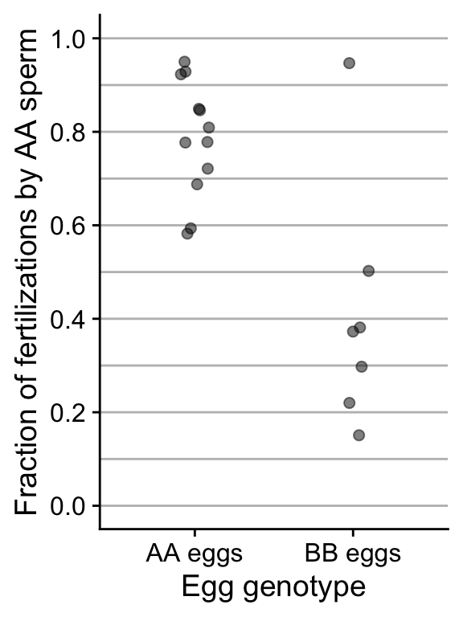

3 Describing data
Due FRIDAY, Feb 2, 2024 by end of day
Submit your answers via Google Classroom
Multiple choice questions
Which of the following accurately describes the numerator for the equation to calculate the variance? [1 point]
- The square root of the standard deviation
- The sum of the average deviations between the data values and the mean
- The sum of the squared deviations between the data values and the mean
- The average of all the data values
Using the data set shown below, what are the correct mean and median values for this data set [1 point]?
Data set:
3, 4, 5, 5, 8, 9, 11, 11- Mean = 6.5, median = 7
- Mean = 7.5, median = 6
- Mean = 6, median = 7.5
- Mean = 7, median = 6.5
The standard deviation has the same units as the data values, whereas the variance does not. [1 point]
- TRUE
- FALSE
Gliding snake undulation rate
We saw the flying snake undulation data in lecture, they come from our WS textbook. The data are reproduced below:
0.9, 1.2, 1.2, 1.3, 1.4, 1.4, 1.6, 2.0 Hz
These data are expressed in Hz which has units of 1/s (cycles per second). Frequency measurements are often expressed as angular velocity which is measured in rad/s (radians per second). Convert from Hz to angular velocity by multiplying by \(2 \pi\), then use the transformed data to answer the following questions
Use the transformed data to calculate the sample mean, standard deviation, and variance.
For your answers be sure:
- report values rounded to one significant digit greater than as reported in the data
- provide the correct units, using the ^ symbol for raising to a power. So if your answers were 2 square meters, you would write “2 m^2”
What is the transformed sample mean? [1 point]
What is the transformed sample variance? [1 point]
What is the transformed sample standard deviation? [1 point]
Sea urchin reproduction
Reproduction in sea urchins involves the release of sperm and eggs in the open ocean. Fertilization begins when a sperm bumps into an egg and the sperm protein bindin attaches to the recognition sites on the egg surface. Gene sequences of bindin and egg-surface proteins vary greatly between closely related urchin species, thus reducing the chance of hybridization between species. In the burrowing sea urchin, Echinometra mathaei, the protein sequence for bindin varies even between populations within the same species. Do these differences affect fertilization? To test this, Palumbi (1999) carried out trials in which a mixture of sperm from AA and BB genotype males were added to dishes containing eggs of either the AA or the BB genotype. The results below indicate the proportion of successfully fertilized eggs (of both AA and BB genotypes) that were fertilized by AA genotype sperm. Note: we do not need to look at fertilization by BB sperm because by definition, the fraction will be 1 - fraction fertilized by AA sperm.

Use the figure above to answer Questions 7–8.
Examine the graph and visually determine the approximate value of the median for each egg genotype. Round your answer to two decimal places. Your visual estimates should be within 0.05 of the true values. [1 point]
Inspect the plot. Based on how the data in each egg genotype group are distributed across the y-axis, answer the follow:
- Which method would be best to compare the spread of the fertilization data for each egg genotype group? Be sure to justify your answer [1 point]
- Use the raw data (shown below) to calculate the spread for each egg genotype group using the method you select in (8a.) [2 points]
You can copy the below code and run it in R to make two vectors: one with the data on fertilization proportions for eggs of AA genotype, the other for eggs of BB genotype:
eggsAA <- c(0.58, 0.59, 0.69, 0.72, 0.78, 0.78, 0.81,
0.85, 0.85, 0.92, 0.93, 0.95)
eggsBB <- c(0.15, 0.22, 0.3, 0.37, 0.38, 0.5, 0.95)